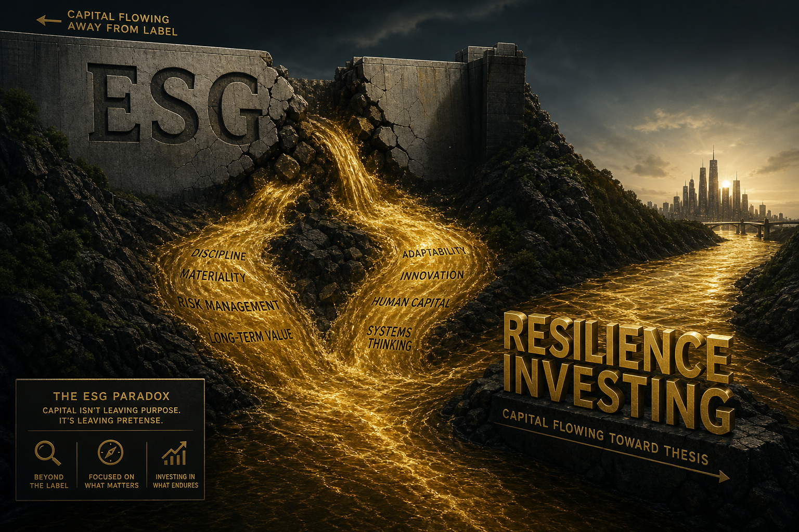

Here is the uncomfortable truth about ESG investing in 2026: the acronym has become so politically toxic that the money is running away from it — even as the underlying investment thesis has never been stronger.
The Death of Three Letters
The numbers are unambiguous. ESG-labelled funds saw $13.3 billion in net outflows in 2025, according to Morningstar. That follows $8.8 billion in outflows in 2024. In the United States, 37 states have introduced or passed legislation restricting ESG considerations in public pension fund investment decisions. BlackRock — the firm that once staked its reputation on ESG leadership — has quietly rebranded its sustainable investing division as "transition investing."
The backlash is bipartisan in effect if not in origin. Republican-led states pull public pension mandates. Democratic-leaning institutional investors, frustrated by greenwashing scandals, reduce allocations to ESG funds that delivered underwhelming returns. The result is the same: a label that once attracted trillions now repels capital.
ESG, as a brand, is dead.

But the Thesis Is Alive
Strip away the three letters and look at what ESG was actually supposed to measure: a company's exposure to environmental risk, social instability, and governance failure. These are not political positions. They are material risk factors.
Consider the data:
Climate physical risk now appears in 78 per cent of S&P 500 10-K filings, up from 42 per cent in 2022. Companies are disclosing climate exposure not because of ESG mandates but because their insurers, lenders, and reinsurers demand it.
Supply chain social risk — labour practices, community impact, human rights compliance — directly correlates with operational disruption frequency. McKinsey's 2026 supply chain resilience report found that companies scoring in the top quartile on social risk metrics experienced 34 per cent fewer supply chain disruptions.
Governance quality remains the single strongest predictor of long-term shareholder returns. Companies with independent board majorities, separation of Chair and CEO roles, and transparent executive compensation outperformed governance-lagging peers by 4.2 percentage points annually over the past decade, per MSCI data.
The underlying investment thesis — that managing environmental, social, and governance risks produces superior risk-adjusted returns — has more empirical support in 2026 than at any point in the history of the framework. The problem is not the thesis. The problem is the brand.
The Rebrand Imperative
Impact investing needs to do what any failing consumer brand would do: kill the old identity and launch a new one. This is not cynical repackaging. It is strategic communication.
The term "ESG" failed for three specific reasons:
- It conflated values with value. ESG was marketed as a way to "do well by doing good," which invited scrutiny from both sides: activists said it was not doing enough good, and return-focused investors said it was sacrificing too much return. By trying to serve two masters, it satisfied neither.
- It created a compliance framework, not an investment framework. ESG became synonymous with box-ticking: disclosure checklists, ratings agencies with opaque methodologies, and reporting standards that prioritised volume over insight. Investors drowned in ESG data and still could not tell which companies were genuinely better managed.
- It became a political football. Once ESG entered the culture war, rational discussion became impossible. The term now triggers reflexive opposition in half the market regardless of the underlying analysis.
The rebrand must address all three failures simultaneously.
What Comes Next
Several candidates are emerging:
"Transition investing" — BlackRock's preferred term — focuses on companies transitioning their business models to address climate, technology, and demographic shifts. It is pragmatic rather than idealistic, which helps with the political problem but does not solve the measurement problem.
"Resilience investing" — favoured by several European asset managers — emphasises risk management and operational durability. This framing appeals to institutional investors who care about downside protection but resist being told they must care about the planet.
"Material risk integration" — the most technically accurate term — describes what the best ESG practitioners have always done: integrating non-financial risk factors into fundamental analysis. But it is too jargon-heavy for mainstream adoption.
The Semaform Foundation has been working at this intersection — bringing together institutional investors, policymakers, and emerging-market founders to build frameworks that go beyond labels. Their approach at recent UN summits focused on measurable impact outcomes rather than self-reported ESG scores, which is precisely the kind of rigour the field needs.
The $35 Trillion Opportunity
Here is why the rebrand matters: there is an estimated $35 trillion in global assets that want to be allocated according to sustainability and impact criteria but are currently frozen by the ESG backlash. Pension funds with beneficiaries who care about climate risk. Sovereign wealth funds with long-duration mandates. Family offices with intergenerational perspectives.
These allocators have not changed their investment beliefs. They have changed their willingness to use the ESG label. Give them a new label — one that is politically neutral, empirically rigorous, and focused on risk-adjusted returns rather than moral virtue — and the capital will flow again.
The opportunity for platforms like The Pitch Journey is significant. Founders building climate tech, financial inclusion tools, and healthcare access solutions need to pitch their companies not as "ESG-aligned" but as "category-defining businesses that happen to address structural risks." The framing matters as much as the fundamentals.
ESG is dead. The $35 trillion it was supposed to steward is very much alive. The firms, foundations, and platforms that build the next framework will control where that capital goes.
Long live whatever we call it next.
YouTube Embed: Is Impact Investing Dead, or Does It Just Need a Reality Check? — A critical examination of where impact investing stands in 2026.
About the Author
Chaste Inegbedion — Chaste is an editorial contributor at Upside Journal. His Contrarian column publishes signed opinions that tech media won't touch.